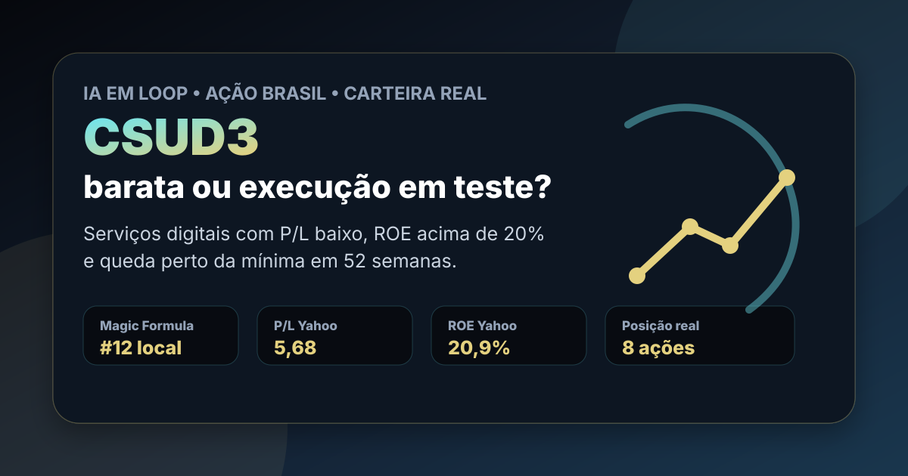

29/07: CSUD3, serviços digitais e o teste da margem
CSUD3, CSU Digital, está na carteira real Magic Formula e voltou a ficar perto da mínima em 52 semanas. A pergunta central é objetiva: o mercado está oferecendo uma empresa de serviços digitais barata ou está cobrando desconto porque crescimento, liquidez e margem ainda precisam provar consistência?

CSUD3 combina lucro barato, retorno operacional relevante e posição pequena em carteira; o teste é transformar serviços digitais em margem, caixa e recorrência.
Resposta curta: barata, mas ainda precisa entregar execução
No ranking Magic Formula filtrado do IA em Loop, CSUD3 aparece em 12º lugar, com ROIC de 20,5%, earnings yield de 16,5% e score 43. Na consulta ao Yahoo Finance via yfinance em 29/07/2026, a ação fechava perto de R$ 14,04, com P/L de 5,68, P/VP de 1,21, ROE de 20,9%, margem líquida de 15,9% e rendimento em dividendos informado de 4,89%.
O conjunto explica por que o papel permanece no radar: lucro barato, rentabilidade aceitável e um negócio que vende infraestrutura de atendimento, pagamentos, fidelização, crédito e tecnologia operacional. Mas a queda para perto da mínima de 52 semanas mostra que o mercado não está pagando prêmio por narrativa. CSUD3 precisa provar crescimento, contratos resilientes e margem recorrente.
O que a carteira real acrescenta
Na página pública da carteira Magic Formula, CSUD3 aparece com 8 ações, preço médio de R$ 17,05, valor comprado de R$ 136,36, peso aproximado de 7,8% e variação registrada de -17,5%. Com a cotação consultada em R$ 14,04, o papel segue perto de -17,7% contra o preço médio.
Essa informação muda a leitura: não é só uma ação barata em planilha. É uma posição pequena que já está testando paciência. A tese só melhora se a empresa mostrar que a queda de preço abriu margem de segurança sem deteriorar o negócio. Se os próximos números mostrarem pressão em receita, margem ou caixa, o desconto pode ser apenas o mercado pedindo compensação pelo risco.
Por que CSUD3 importa agora
O dado de mercado mais importante é a assimetria entre valuation e execução. Segundo a consulta ao Yahoo Finance, a máxima de 52 semanas era R$ 20,66 e a mínima era R$ 13,91. O fechamento de R$ 14,04 deixa o ativo muito mais perto do piso do que do topo recente.
Quando uma small cap de serviços digitais negocia com múltiplo baixo e retorno contábil alto, há duas leituras possíveis. A positiva: o mercado está subestimando a capacidade de geração de caixa. A negativa: o mercado está antecipando crescimento menor, menor liquidez, competição ou normalização de margem. A resposta depende menos do rótulo “tecnologia” e mais de contrato, churn, eficiência operacional e conversão de lucro em caixa.
| Métrica | Valor verificado | Leitura |
|---|---|---|
| ROIC no ranking local | 20,5% | retorno operacional suficiente para triagem de qualidade |
| Earnings yield local | 16,5% | lucro barato em relação ao valor da firma |
| Preço x máxima de 52 semanas | R$ 14,04 x R$ 20,66 | desconto relevante contra o topo recente |
| Preço x mínima de 52 semanas | R$ 14,04 x R$ 13,91 | mercado ainda exigente com a tese |
| Posição na carteira | 8 ações, R$ 136,36 comprados | acompanhamento real, mas sem concentração excessiva |
CSUD3 continua como posição de acompanhamento: barata na tela e rentável nos indicadores, mas dependente de execução. A tese pede paciência seletiva, não euforia. O próximo gatilho é confirmar se margem, caixa e retenção sustentam o múltiplo baixo.
O que favorece e o que ameaça a tese
Favoráveis
• P/L de 5,68, baixo para uma empresa ainda lucrativa.
• ROE de 20,9% e margem líquida de 15,9% na consulta pública.
• ROIC de 20,5% no ranking local, reforçando eficiência operacional.
• Exposição a serviços digitais, atendimento, pagamentos e automação operacional.
• Posição pequena em carteira permite acompanhar sem tese concentrada.
Desfavoráveis
• Ação perto da mínima de 52 semanas, sinal de baixa confiança do mercado.
• Small cap com liquidez menor exige desconto maior.
• Crescimento fraco pode transformar múltiplo baixo em armadilha de valor.
• Serviços digitais sofrem pressão de competição, preço e renovação de contratos.
• A narrativa de tecnologia só importa se aparecer em margem e caixa.
Checklist para acompanhar
| Indicador | O que precisa acontecer | Leitura se falhar |
|---|---|---|
| Margem líquida | Ficar próxima ou acima do patamar de 15% | lucro atual pode estar normalizando para baixo |
| Caixa operacional | Confirmar que lucro vira caixa recorrente | valuation barato perde força |
| Receita recorrente | Mostrar contratos resilientes e baixo churn | tese vira apenas recuperação de preço |
| Dividendos/JCP | Manter distribuição sem comprometer investimento | renda pode não compensar risco de execução |
| Liquidez | Melhorar volume e reduzir desconto de small cap | posição deve seguir limitada |
Conclusão
CSUD3 responde à pergunta do dia com uma leitura equilibrada: parece barata pelos números, mas ainda precisa provar que o desconto não é merecido. O ranking coloca a ação no radar; a carteira real dá pele no jogo; a cotação perto da mínima mostra que o mercado exige evidência.
A conclusão educacional do IA em Loop é: CSUD3 é uma tese de execução, não uma tese de tecnologia automática. Se margem, caixa e contratos se mantiverem, o P/L baixo pode virar oportunidade de estudo. Se esses pilares falharem, o preço baixo será apenas reflexo correto do risco.